SENTRI · INSPECTION · 2026-11-19
巡检入口：待复核
这些差异牵涉业务范围、权限或保存规则。页面是当下原型和注明的旧稿，建议供复核，未作为当前流程启用。
1. 搜到别的单元的猪，能做哪些操作？
Unit 7 巡检 → Search 000430 → Unit 6 / A2 的猪档案 → Actions
当前查找可以跨单元看档案，当前扫码样例只读本单元。旧分支另有「移入本单元」和「移入并选择」的设计，尚未发布，移入确认不可提交。
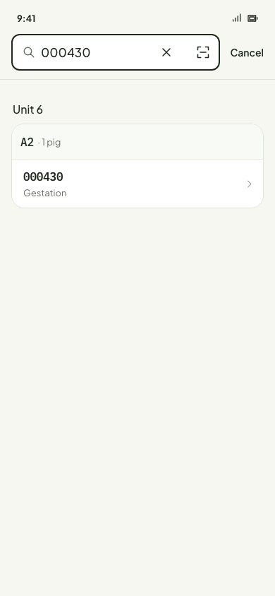
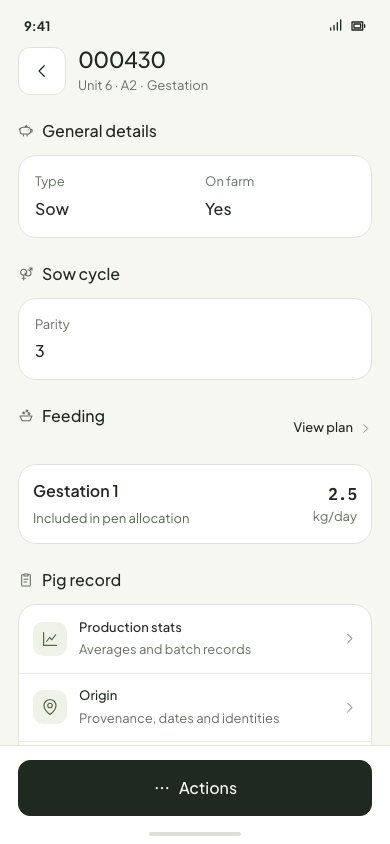
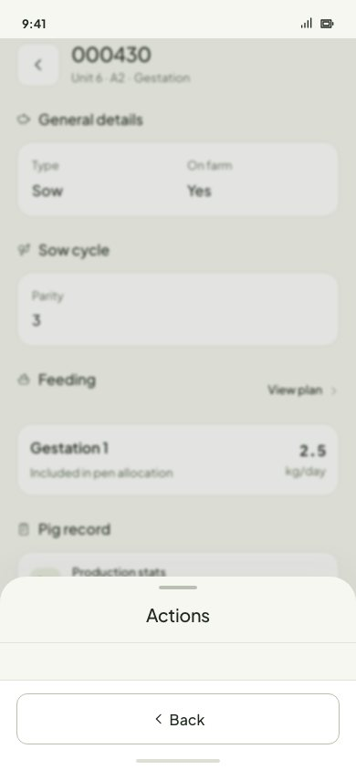
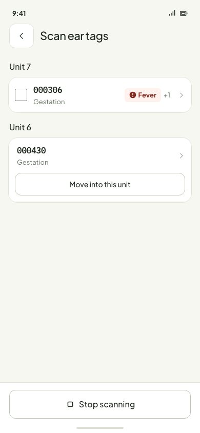
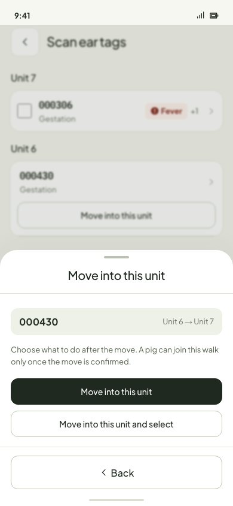
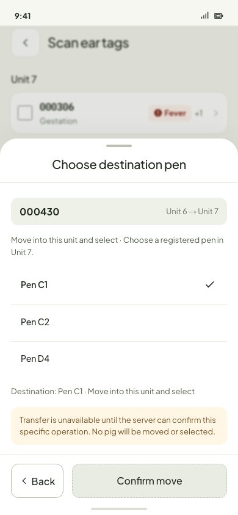
建议：先定为可看档案、不能加入本次批量。若继续做移入，两种操作都应先确认真实转舍成功，再按所选意图决定是否勾入；同时补齐无权、失败、重复读与离线状态。另需明确是否允许在原单元对它直接做护理或备注。
2. 分娩和巡检的栏位页，该共用到哪一层？
巡检列表 → C1；分娩房间 → B1 的栏名 ›
需求把两边的栏位工具都登记在巡检下。实现仍有两套：常用工具相似，饲喂、观察、全选、保存后的返回位置有差别。截图使用各自的样例栏。

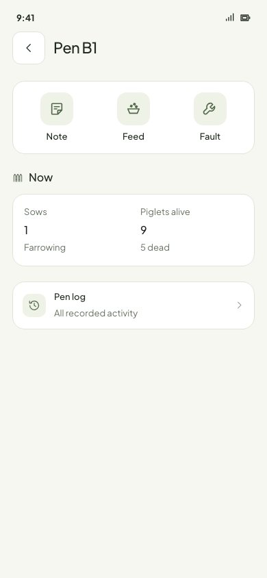
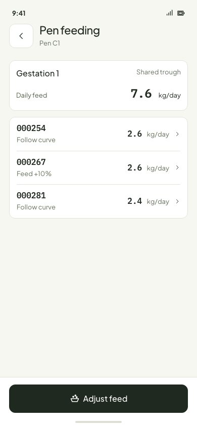
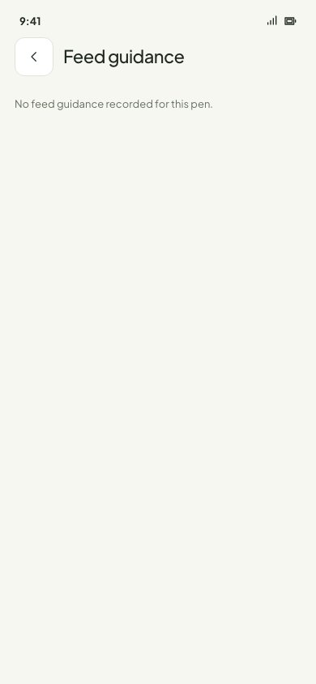
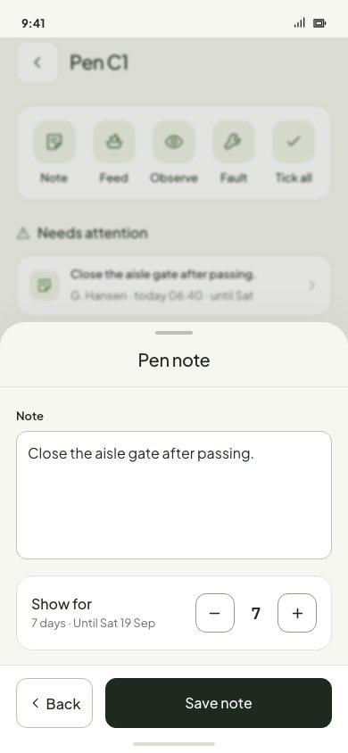
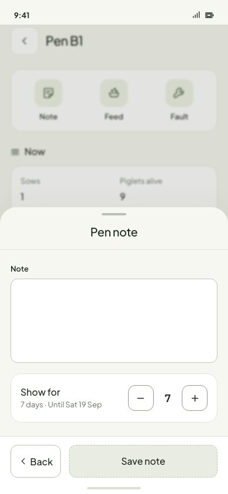
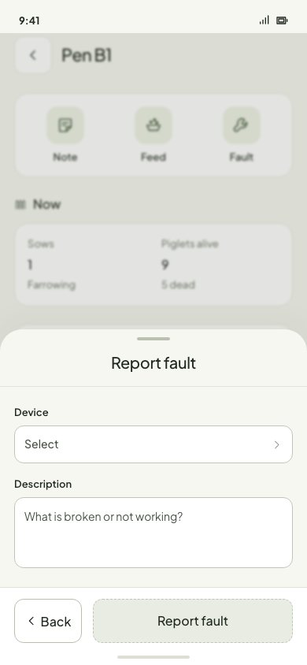
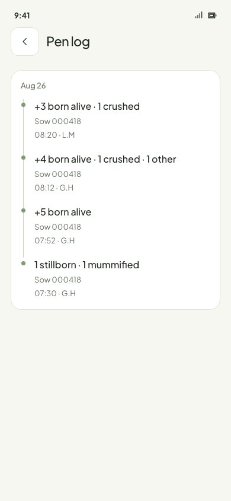
建议：两边共用备注、故障和日志的规则及页面，保留各任务自己的返回。先确认分娩是否需要 Observe、Tick all，饲喂是只读还是也按栏位权限可改，再决定共用页面应给每个宿主哪些入口。
3. 栏位盘点和单元总览，要不要进入当前巡检？
巡检 → 栏位 Now / Pigs；首页 → Environment & devices
当前 Web 的 Pigs 是事实，点不到盘点。旧工作流的 Set count 仍可查；Android 另有从 Pigs 进入的盘点预览。单元环境、设备和批次总览在巡检原型没有可用入口，首页已经有环境设备。
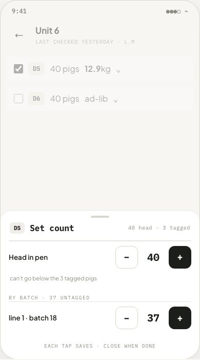

建议：先分清盘点是只核对还是要改存栏，再对齐 Android 的栏位入口、无耳标和跨批计数规则。环境设备继续由首页进；是否在巡检加单元摘要或批次筛选入口另行决定。
4. 从巡检开分娩，进任务房间还是指定母猪？
巡检 → 分娩中 000281 → Current tasks / Actions → Open Farrowing
两个入口都跳到分娩工作区，地址没有耳号。已完成分娩的 000254 样例没有活动分娩入口。
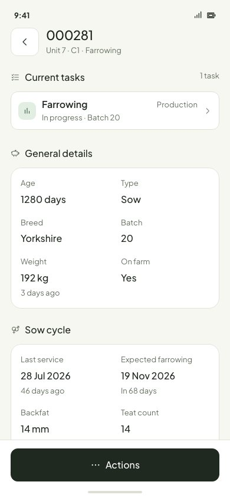
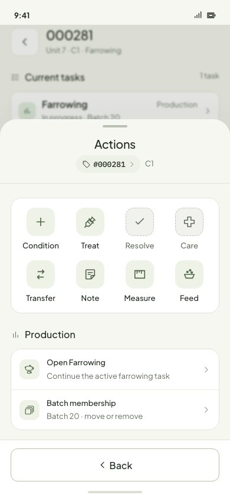
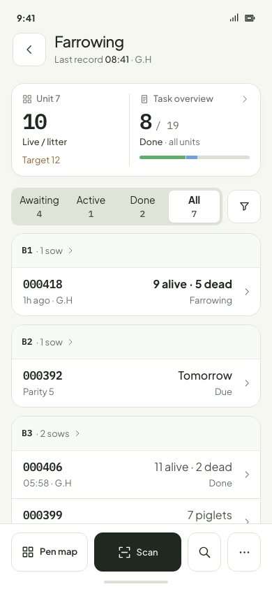
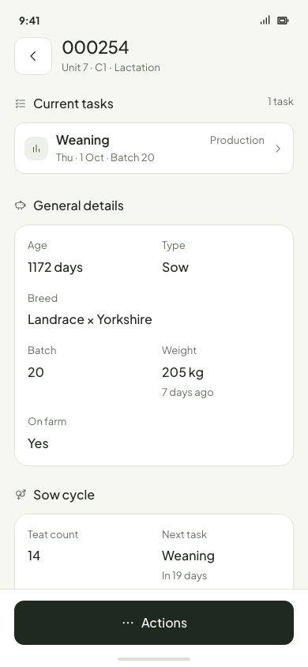
建议：这两个入口都带上任务、单元和耳号，打开这头母猪的对应分娩状态，返回原来的巡检入口。先确认无匹配任务、猪已换栏、已经完成及返回草稿的行为。
5. 首页点某头待处理猪，落到 Health 还是直接看猪？
Home → To treat / Monitoring → 点某头的一行
现在链接只带单元，落到 Health 名单，再从名单开档案。Home 的放大镜查到某头时，会直接打开档案。两条入口不是同一个用途。

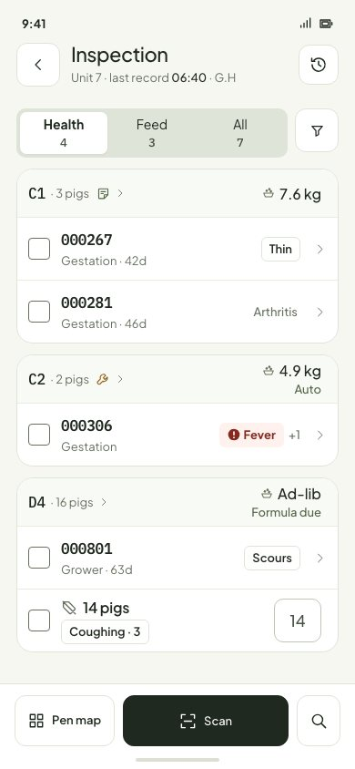

建议：若预期是一头猪，就让待处理行带耳号，到同一份猪档案；若预期是一组猪，入口明示「进入该单元巡检」。保留返回原待处理列表。